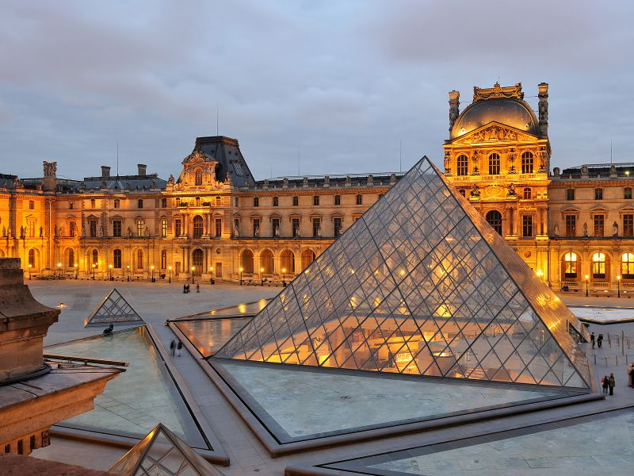
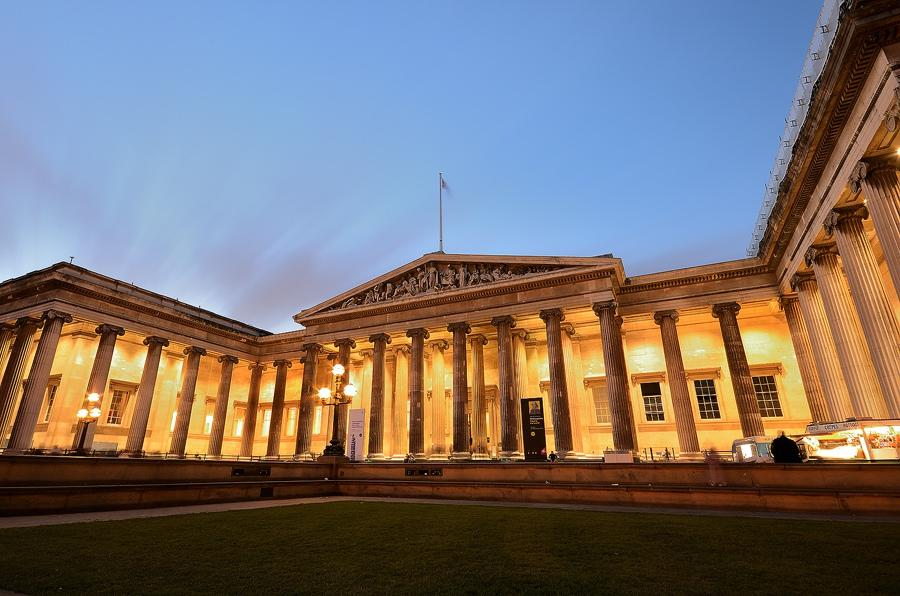
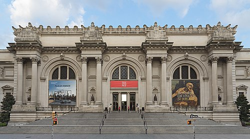
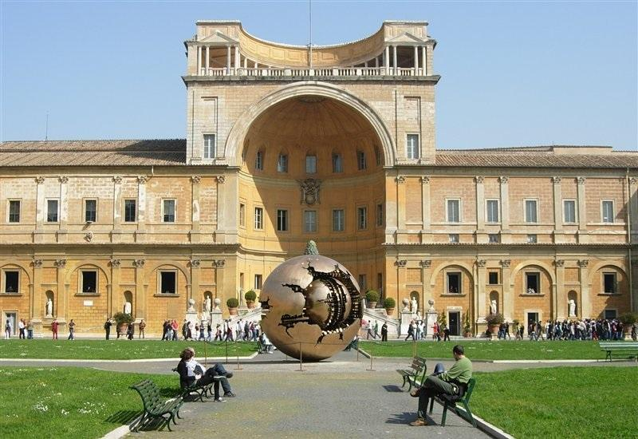
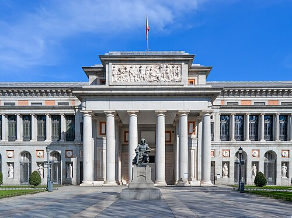
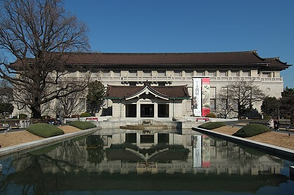
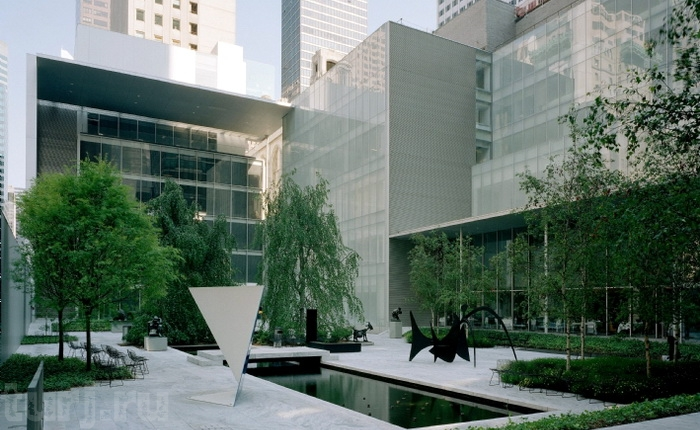
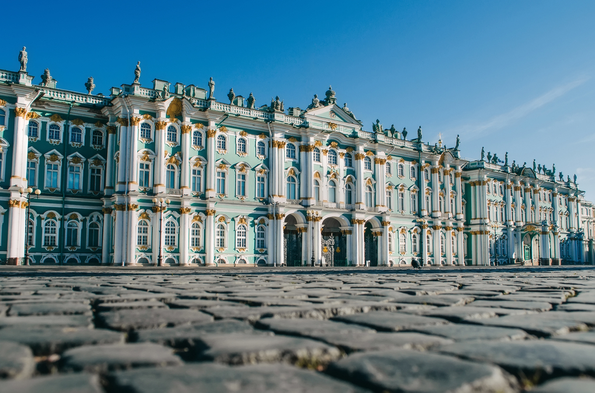
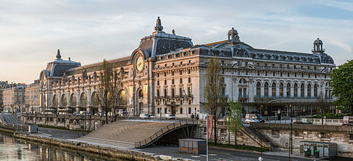
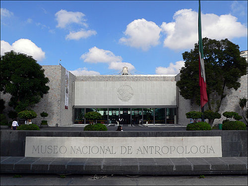

Галерея
Візуальна подорож музеями світу — від Лувру до Метрополітен, від Ватиканських залів до сучасних мультимедійних експозицій. Натисніть на фото, щоб дізнатися більше про кожен музей та його унікальні колекції.
Лувр — найбільший художній музей світу, розташований у Парижі, Франція.
Музей розташований у колишньому королівському палаці та містить понад 35 000 експонатів.
Його перлина — «Мона Ліза» Леонардо да Вінчі, а також «Венера Мілоська», «Кодекс Гаммара» та інші шедеври світового мистецтва.
">
Британський музей у Лондоні — один з найстаріших музеїв у світі, заснований 1753 року.
Його колекція включає Розетський камінь, грецькі скульптури Парфенона, мумії стародавнього Єгипту та артефакти з Месопотамії, Китаю, Африки та Америки.
Вхід до музею — безкоштовний.
">
Метрополітен-музей мистецтв (The Met) у Нью-Йорку — найбільший художній музей у США.
Його фонди охоплюють понад 5 000 років мистецтва: від давньоєгипетських саркофагів до імпресіоністів, від азійських колекцій до середньовічної зброї.
Метрополітен відомий своєю величною архітектурою і даховими виставками.
">
Ватиканські музеї — комплекс музеїв у Ватикані, створений папами протягом століть.
Тут зберігається Сікстинська капела з фресками Мікеланджело, Станци Рафаеля, скульптури Лаокоонта, античні мозаїки, середньовічне та ренесансне мистецтво.
Щороку музеї відвідують понад 6 мільйонів людей.
">
Музей Прадо в Мадриді — головний музей Іспанії, відомий багатою колекцією живопису.
Основу становлять роботи іспанських майстрів: Веласкеса, Гойї, Ель Греко. Також представлені твори Тиціана, Рубенса, Босха та Рафаеля.
Прадо — центр вивчення європейського мистецтва XVI–XIX століть.
">
Національний музей Токіо — найстаріший музей Японії, заснований у 1872 році.
В експозиції: самурайські обладунки, мечі катана, буддійська скульптура, традиційні японські костюми, гравюри укійо-е, кераміка та бронза.
Музей знаходиться в парку Уено, поруч із кількома іншими культурними установами.
">
Музей сучасного мистецтва (MoMA) у Нью-Йорку — один із провідних музеїв сучасного і сучасного мистецтва.
Тут представлені роботи Пікассо, Ворхола, Кандинського, Джексона Поллока і багато інших.
MoMA активно підтримує нові форми мистецтва, дизайн і медіа.
">
Державний Ермітаж у Санкт-Петербурзі — один із найбільших і найстаріших музеїв світу.
Його колекція включає понад 3 мільйони експонатів: картини, скульптури, прикраси, археологічні знахідки.
Ермітаж відомий своєю розкішною архітектурою, зокрема Зимовим палацом.
">
Музей Орсе у Парижі розташований у колишньому залізничному вокзалі та відомий однією з найбагатших колекцій імпресіоністів і постімпресіоністів.
Тут можна побачити роботи Моне, Ренуара, Ван Гога, Дега та інших майстрів кінця XIX — початку XX століть.
Це одна з найвідоміших арт-колекцій світу.
">
Національний музей антропології у Мехіко — найбільший музей доколумбової культури в Латинській Америці.
Відомий завдяки артефактам цивілізацій майя, ацтеків і інших корінних народів, серед яких легендарний Камінь Сонця (календар ацтеків).
Музей має унікальну архітектуру та сучасні експозиції.
">